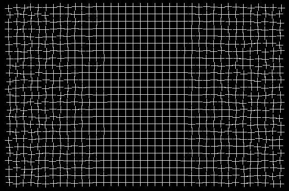

It seems, that our brain has some prefference for regular patterns over irregular ones, and it redraws visual scenes according to that prefference. As you stare at the center of the grid, the regularity of the grid pattern at the center spreads into the irregular parts in the periphery.
Project was made by Team Latvia